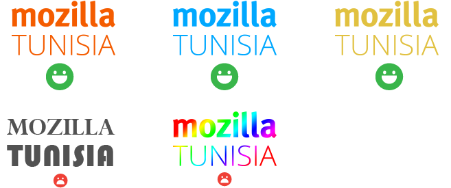

Mozilla Tunisia - Image de marque
Lignes directrices
Pour toutes les utilisations autorisées de notre image de marque, vous ne pouvez pas:
- Modifier notre logo quelque soit l'objectif
- Mettre un logo dans une telle proximité aux autres contenues qu'il devient indistinguishable
- Utiliser notre logo d'une manière abusive, déceptive ou obscène à la personne normale
- Utiliser notre logo dans des sites Web ou d'autres contenues concernant des discours d'haine, pornographie, jeux d'argent ou des activités illégales
- Utiliser nos logos pour ou en relation avec des contenues qui nous dénigrent ou qui touche à notre réputation
Logo
Le mot Mozilla est une norme fixée qui utilise Meta Bold. S'il vous plaît téléchargez l'un des formats de fichiers vers la droite si vous avez besoin de l'utiliser plutôt que de le taper vous-même.
Télécharger
{kind=link}
{kind=link}
Vous pouvez utiliser n'importe quelle couleur unie pour le mot-symbole Mozilla Tunisia. En cas de doute, s'il vous plaît utilisez la couleur de charbon de bois par défaut fourni ci-dessus.
Les erreurs communes
Pensez à ça comme l'équivalent de porter vos chaussures sur les mauvaises pieds: ils sont toujours des chaussures, ils sont essentiellement là où ils sont censés être, mais il se sentent tout simplement faux.


Mozilla Tunisia Logo by Mozilla Tunisia is licensed under a CC-BY-NC-SA 4.0 License.
Based on this work